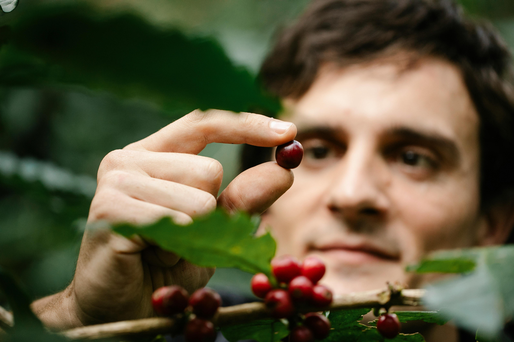

About Us
Why We Are Different
We roast small batches fresh every day and source directly from the farms we know personally. No middlemen, no shortcuts — just exceptional specialty coffee and teas with unmatched freshness, traceability, and real flavor that mass-market brands simply can't match.
Our Community
Coffee connects people. We build real relationships with the farmers who grow our beans, the roasters who perfect each batch, and the passionate customers who enjoy them. From direct-trade partnerships and local tastings in Daytona Beach to our growing family of subscribers, we're creating a community rooted in quality, sustainability, and the simple joy of a great cup.
